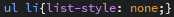
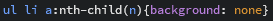

Оформление списков
Списки оформляются в CSS чаще всего для того чтобы сделать их в в качестве меню сайта, как например на данном сайте с левой стороны. Можно задать цвет, подсветку, установить грани, изменить оформление и многое другое. И конечно же в каждом элементе списка будет иметься ссылка для перхода на тот или иной контент.
К примеру, точки или нумерация списков, которая порой не нужна, убирается так , это означает что для всех блоков содержащих список ul li будут убраны точки.
А если есть необходимость в оформлении какого-либо отдельного элемента списка можно воспользоваться свойством псевдокласса nth-child(n), примерно так: , nth устанавливается в качестве выбора желаемого значения в скобках где можно указать номер элемента списка или же задать все элементы как здесь; он может быть заменён например на свойство последнего элемента last. А в фигурных скобках вносятся желаемые свойства.